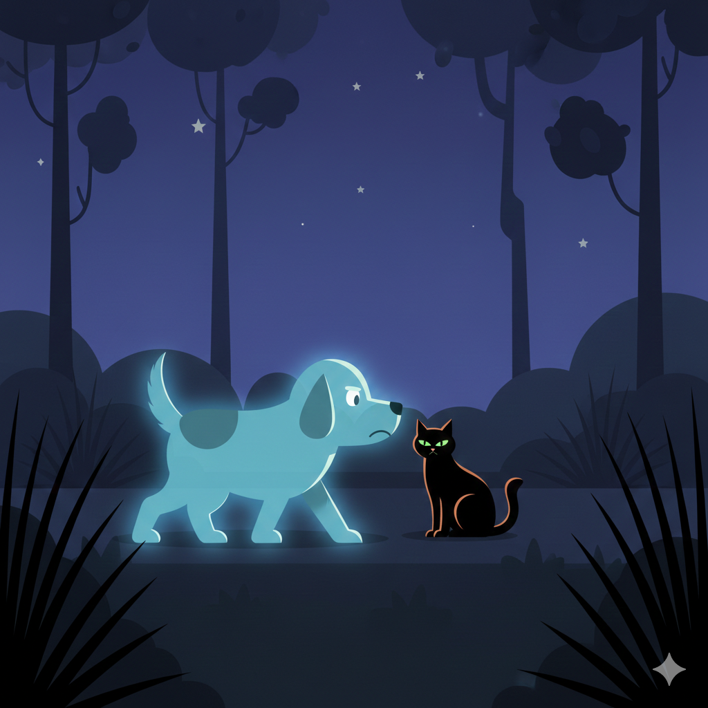

Jake corrió como cuando era joven. Por un momento, el tiempo dejó de existir.
La tarde cayó lentamente. El silencio que llegó después fue diferente.
Miku comprendió que aquel había sido el último día más feliz.
Jake partió dejando en el jardín el eco de su alegría.
